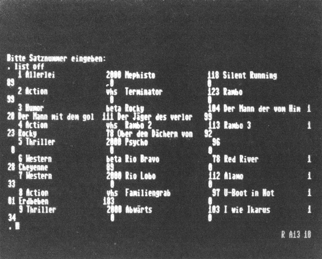

Arbeiten mit dBase II
Das Datenbanksystem dBase II von Ashton-Tate hat sich nicht nur auf IBM-PCs und Kompatiblen einen Namen gemacht, es gehört auch zur professionellsten Software, die derzeit für den C 128 verfügbar ist. In diesem Beitrag geben wir allen, die noch nicht mit dBase II gearbeitet haben, einen kurzen Einstieg und den Anwendern kompakte Nachschlagetabellen zur täglichen Arbeit an die Hand.

Wir wollen uns zuerst schrittweise vom Starten des Programmes dBase II über die Erstellung einer Datei bis zur Dateneingabe vorarbeiten. Bei den »Vorarbeiten« werden einige Möglichkeiten, die uns das Betriebssystem CP/M zur Verfügung stellt, um schneller und effektiver mit dem Datenbanksystem umgehen zu können, zur Sprache gebracht. Diese »Möglichkeiten« sind zwar für den Programmablauf nicht erforderlich, bieten aber für manchen eine wichtige Anregung.
Erstellen einer dBase II-Arbeitsdiskette
Stellen Sie sich zuerst, wie im Handbuch ausführlich beschrieben, eine Arbeitskopie der dBase II-Disketten her. Sofern Sie dabei die Floppy 1571 verwenden, ergibt sich schon nach dem Formatieren im 1571-Modus (»C 128 double sided« im Programm »Format«) ein Geschwindigkeits- und Speicherplatzvorteil gegenüber der Originaldiskette. Dies liegt daran, daß Software für den C 128 üblicherweise im 1541-Modus aufgezeichnet wird, um die Möglichkeit zu bieten, sowohl mit der Floppy 1541 als auch den Folgemodellen 1570 und 1571 die Disketten zu verwenden. Da die Floppy 1571 die Disketten beidseitig verwendet und zudem ihr eigenes Format weit schneller einlesen kann, sollte man bei der Formatierung nur den »double-sided«-Modus verwenden. Sollten Sie sich dennoch für den 1541-Modus entscheiden, dürfen auf der vermeintlichen »Rückseite« der Diskette keine wichtigen Programme oder Datenbestände aufbewahrt werden, zumindest nicht ohne Schreibschutz auf dieser Seite. Das Programm »Format« formatiert nämlich auch gegen Ihren Willen im einseitigen Modus die zweite Seite mit. Soviel zum Formatieren. Da auf der dBase II-Arbeitsdiskette nach dem Kopieren die Programme »CPM+.SYS« und »CCP.COM« enthalten sein sollten (um nicht das Betriebssystem von einer anderen Diskette einlesen zu müssen), besteht zuerst die Möglichkeit, die Bildschirmfarben im 40- und 80-Zeichenmodus beliebig den eigenen Bedürfnissen und Wünschen anzupassen. Starten Sie hierfür das Programm »Keyfig«, wählen Sie die Option »Definitions on the CP/M boot disk« an und legen die dBase II-Arbeitsdiskette (auf der das System dann enthalten sein sollte) ein. Wählen Sie nun das Ändern der »logischen« Farben und danach die Art Ihres Bildschirmes (40- oder 80-Zeichen-Darstellung) an. Wenn Sie nun als logische Farbe »a« für Schwarz (=Hintergrund) drücken und anstelle deren beispielsweise »g« für Dunkelblau wünschen, müssen Sie nur noch bei »Select physical color to assign« »g« drücken, fertig. Mit der Schriftfarbe (»e«) können Sie dann auf gleiche Weise verfahren. <RETURN> beendet die Farbzuweisung. Nachdem Sie »done logical/physical colors« anwählten, erscheint die Frage, wohin die neuen Werte gespeichert werden sollen. Da wir die farblichen Änderungen dauerhaft nach jedem »Booten« des CP/M-Systems zur Verfügung haben möchten, speichern wir also auf der »CP/M boot disk«. Davon ausgehend, daß Sie zu diesem Zeitpunkt keine weiteren Änderungen beabsichtigen, können Sie nun die Schlußabfrage mit »N« beantworten, das System neu starten und Ihre Farbkombination begutachten.
Auf die gleiche Weise läßt sich mit dem Programm »Keyfig« auch die Tastatur (also nicht nur die Funktionstasten) mit anderen als den dort gewohnten Tasten belegen, lassen sich sogar Zeichenketten, Farbcodes und spezielle Funktionen programmieren! Dies hört sich vielleicht schwierig an, ist es jedoch nicht. Es nimmt allenfalls etwas Zeit in Anspruch, sich selbst klar darüber zu werden, wo man nun am günstigsten was unterbringt. Den Funktionstasten könnten Sie beispielsweise Strings wie »display structure« oder »display files like *.*« zuordnen. Geben Sie am Ende des Textes noch <CTRL+M> ein, so wird ein RETURN (CHR$(13) angehängt und der Befehl gleich ausgeführt.
Die letzte hier vorgestellte Möglichkeit, sich selbst den Umgang mit CP/M und dBase II zu erleichtern, besteht darin, eine Stapelverarbeitungsdatei einzurichten. In diese Datei können Sie dann Programmnamen eintragen, die ausgeführt werden sollen und können diesen Programmen sogar noch Parameter übergeben. Nennt man diese Datei dann noch »Profile.sub«, so wird deren Inhalt bearbeitet, bevor überhaupt die Bereitschaftsmeldung »A« erscheint. Befindet sich die Datei »Profile.sub« mit folgendem Inhalt auf der Diskette
setup
<g
<u
dbaseso wird zuerst »Setup.com« geladen, der Wert »g« für »German« (deutsche Tastaturbelegung) und »u« für Druckerbetrieb über den User-Port übergeben (die Meldung »Program input ignored« können Sie in diesem Zusammenhang ignorieren) und schließlich »dBase II« ausgeführt. Die spitze Klammer nach links signalisiert, daß die folgenden Zeichen als Pseudo-Tastatureingaben zu verstehen sind. Es lassen sich auch mehrere Zeichen hintereinander auf diese Weise verwenden. Haben Sie unter dBase II schon ein Programm geschrieben, kann man dies gleich berücksichtigen, etwa »dbase video«. Ist dies alles installiert, müssen Sie lediglich noch die Arbeitsdiskette einlegen und den C 128 einschalten, alles weitere wird »selbständig« von »Profile.sub« veranlaßt. Sofern Sie keine eigene Anwendung in Form eines Programms unter dBase II unmittelbar starten möchten, dafür aber auf das Datum verzichten wollen, müssen Sie an unser obiges Beispiel nur noch eine einzelne spitze Klammer anfügen. Ohne folgende Zeichen wird dies als <RETURN> interpretiert, was bedeutet, daß die Eingabe des Datums übersprungen wird. Auch die Frage, wie die Datei »Profile.sub« zu erstellen ist, soll nicht unbeantwortet bleiben. Sie benötigen hierfür den Editor »Ed«, der hier mit »Ed profile.sub« aufgerufen wird. Im Commodore-Handbuch zu CP/M auf dem C 128 finden Sie unter den Kapiteln 7 - 55 bis 7 - 58 eine Aufstellung der Editorkommandos (die sehr gewöhnungsbedürftig sind). Hier sollen nur in Kürze die uns direkt betreffenden Anweisungen beschrieben werden. Nachdem sich der Editor mit dem »*« meldet, geben Sie »I« für Insert (Einfügen) ein; da (noch) kein Inhalt vorhanden ist, wird das Einfügen von Text am Anfang durchgeführt. Es erscheint »1:« auf dem Bildschirm, Sie sind also in der ersten Zeile. Nachdem Sie in einem »manuellen Durchgang« festgestellt haben, welche Programme mit welchen Parametern Sie für Ihre Zwecke benötigen und dies am besten gleich notiert haben, tragen Sie nun Zeile für Zeile Ihre Anweisungen ein. Mit Ausnahme der letzten Eingabezeile verwenden Sie immer <RETURN>, um die Zeile abzuschließen. In besagter letzter Zeile drücken Sie <CTRL+Z>, es erscheint dann wieder das Sternchen (»*«), und Sie können mit <E> und <RETURN> die neu erstellte Datei auf Ihre Arbeitsdiskette schreiben. Nach diesen (nicht dringend erforderlichen) Vorbereitungen, deren Prinzip zudem bei allen Anwendungen unter CP/M verwendet werden kann, steht Ihnen das dBase II-System mit allen Einstellungen Ihrer Wahl zur Verfügung, nachdem Sie lediglich die Diskette eingelegt und den C 128 eingeschaltet haben!
dBase II-Kompaktkurs
Da eine ausführliche Beschreibung aller Befehle und Funktionen von dBase II selbst den Rahmen dieses Sonderheftes sprengen würde, wurde ein Kompromiß zwischen Kurs und Nachschlagewerk gewählt. Im folgenden finden Sie ein alphabethisches Verzeichnis aller dBase II-Befehle mit Kurzbeschreibung (Tabelle 1), ein Verzeichnis aller Funktionen (Tabelle 2) und eine Übersicht über alle wichtigen Begriffe rund um dBase II (Tabelle 3). Weiterhin werden alle Cursortasten in den verschiedenen Modi aufgeführt (Tabelle 4), die dBase II-Befehle mit Beispielen erklärt (Tabelle 5), die Fehlermeldungen sowie deren Ursache/Beseitigung zusammengefaßt (Tabelle 6) und schließlich noch wichtige Systemdaten (Tabelle 7) und Literaturhinweise (Info) gegeben.
Sie erhalten jederzeit im Programm Hilfestellung zum dBase II-System, indem Sie »HELP« und den Namen des dBase II-Kommandos oder »HELP« und eines der Schlüsselwörter
| – ANWENDERPROGRAMME | -BEGRIFFE |
| – -HELP | -NEU |
| – KENNDATEN | -BEISPIELE |
| – FUNKTIONEN | -DBASE |
| – BILDSCHIRM | -MODI |
| – -FEHLER | -INSTALL |
eingeben. Das Schlüsselwort muß dabei vollständig eingegeben werden. Sofern das Schlüsselwort nicht gefunden werden kann (etwa aufgrund eines Eingabefehlers oder weil die HELP-Datei gelöscht wurde), erscheint die Systemmeldung »Keine HELP-Texte gefunden«. Umfaßt ein HELP-Text mehrere Bildschirmseiten, so wird am Ende jeder Seite »System wartet« ausgegeben. Sofern Sie auf der dBase II-Arbeitsdiskette die HELP-Datei entbehren können (kopieren Sie in diesem Fall »DBASEMSG.TXT« am besten auf eine ungenutzte Diskette und löschen die Datei mit »erase« auf der Arbeitsdiskette), gewinnen Sie wertvollen Speicherplatz (etwa 60 KByte), was besonders bei Verwendung nur eines Laufwerkes wichtig werden kann.
Die wichtigsten dBase II-Dateien befinden sich auf der ersten Diskette. Dies sind:
| DBASE.COM | – | Hauptprogramm |
| DBASEOVR.COM | – | Übersichten und System-Mitteilungen |
| DBASEMSG.TXT | – | HELP-Datei (nur erforderlich, wenn Sie »HELP« nutzen) |
| INSTALL.COM | – | Programm zur Anpassung an das Terminal (die Version für den C 128 ist bereits angepaßt). |
Wie schon erwähnt, ist das Programm »INSTALL.COM« sowie die Textdatei »DBASEMSG.TXT« entbehrlich; Sie sollten beide aber vorsichtshalber auf eine eigene Diskette kopieren, für den Fall, daß die Systemdisketten beschädigt werden.
(O.Trottno/bj)Literatur:
Dr. Peter Albrecht, dBase II für den Commodore 128 PC, Markt&Technik Verlag 1985, ISBN 3-89090-189-1, 280 Seiten, Preis: 49 Mark
Dr. Peter Albrecht, Das Datenbanksystem dBase II, Markt&Technik Verlag 1985, ISBN 3-89090-143-3, 280 Seiten, Preis: 68 Mark
Wayne Ratliff, dBase II-Anwenderhandbuch, Ashton-Tate GmbH, Markt&Technik Software-Verlag 1984, 437 Seiten, Preis: 49 Mark
| ? | – | zeigt einen Ausdruck, eine Variable oder ein Feld an |
| ?? | – | zeigt eine Liste von Ausdrücken an, ohne vorher einen Zeilenvorschub auszuführen |
| @ | – | gibt formatierte Daten auf Bildschirm oder Drucker aus |
| ACCEPT | – | Eingabe einer Zeichenkette in eine bestimmte temporäre Variable |
| APPEND | – | fügt Informationen von einer anderen dBase II-Datenbank oder -Datei an die benutzte Datei an |
| BROWSE | – | Bildschirm-Darstellung und -Bearbeitung der Datenbank |
| CANCEL | – | beendet die Ausführung einer Programmdatei |
| CHANGE | – | feldweise Bearbeitung von Datenbanken |
| CLEAR | – | schließt alle eröffneten Datenbanken und löscht alle erzeugten temporären Variablen |
| CONTINUE | – | setzt die Suchaktion nach einem LOCATE-Befehl fort |
| COPY | – | kopiert Daten aus einer Datei in eine andere Datei |
| COUNT | – | zählt die Datensätze in einer Datei, die eine angegebene Bedingung erfüllen |
| CREATE | – | erzeugt eine neue Datenbank-Datei |
| DELETE | – | löscht eine Datei oder markiert einen Satz zum Löschen |
| DISPLAY | – | zeigt Dateien, Datensätze, Strukturen, temporäre Variable oder den Status an |
| DO | – | führt Programmdateien oder strukturierte Schleifen aus |
| EDIT | – | ruft die Bearbeitung von Daten in einer Datenbank auf |
| EJECT | – | erzeugt Seitenvorschub auf dem Drucker |
| ELSE | – | alternativer Weg bei der Befehlsausführung innerhalb IF |
| ENDCASE | – | beendet einen CASE-Befehl |
| ENDDO | – | beendet einen DO WHILE-Befehl |
| ENDIF | – | beendet einen IF-Befehl |
| ENDTEXT | – | beendet einen TEXT-Befehl |
| ERASE | – | löscht den Bildschirm |
| FIND | – | sucht einen Datensatz in einer indizierten Datei |
| GO/GO TO | – | geht zu einer bestimmten Position in einer Datei |
| HELP | – | gibt dem Benutzer Hilfestellung auf dem Bildschirm |
| IF | – | erlaubt eine bedingte Befehlsausführung |
| INDEX | – | erzeugt eine Index-Datei |
| INPUT | – | erlaubt Eingabe von Ausdrücken in temporäre Variable |
| INSERT | – | einfügen neuer Datensätze |
| JOIN | – | erzeugt gemeinsame Ausgabe aus zwei Datenbank-Dateien |
| LIST | – | listet Dateien, Datensätze, Strukturen, temporäre Variable und den Status |
| LOCATE | – | findet einen Datensatz, der eine Bedingung erfüllt |
| LOOP | – | springt zum Anfang eines DO WHILE-Befehls |
| MODIFY | – | erzeugt und/oder bearbeitet eine Programm-Datei oder ändert die Struktur in einer Datenbank-Datei |
| NOTE oder | – | Kommentar-Einleitung in einem Programm |
| PACK | – | eliminiert Datensätze, die zum Löschen markiert sind |
| QUIT | – | verläßt dBase II und geht zum Betriebssystem zurück |
| READ | – | erlaubt Datei-Bearbeitung mit formatiertem Bildschirm, nimmt die Daten aus SAY- und GET-Anweisungen entgegen |
| RECALL | – | löscht die Markierungen zum Löschen von Datensätzen |
| REINDEX | – | aktualisiert die vorhandene Index-Datei |
| RELEASE | – | eliminiert unerwünschte temporäre Variablen und macht Speicherbereiche frei |
| REMARK | – | erlaubt die Anzeige beliebiger Zeichen |
| RENAME | – | gibt einer Datei einen neuen Namen |
| REPLACE | – | ändert Informationen in einem Datensatz oder in einer ganzen Datenbank-Datei Feld für Feld |
| REPORT | – | erzeugt einen Bericht |
| RESET | – | startet das Betriebssystem nach dem Einlegen einer neuen Diskette |
| RESTORE | – | reaktiviert temporäre Variable aus einer Datei, gegebenenfalls in Ergänzung zu bereits vorhandenen Variablen |
| RETURN | – | beendet den Lauf einer Programm-Datei |
| SAVE | – | speichert die temporären Variablen auf der Diskette |
| SELECT | – | schaltet zwischen primärer und sekundärer Datenbank um |
| SET | – | setzt dBase II-Kontrollparameter |
| SKIP | – | springt vorwärts und rückwärts in der Datenbank |
| SORT | – | erzeugt eine Datei, die nach einem Schlüsselfeld sortiert ist |
| STORE | – | erzeugt temporäre Variablen |
| SUM | – | berechnet die Gesamtsummen der Felder in einer Datenbank |
| TEXT | – | gibt Textblöcke von einer Programm-Datei aus |
| TOTAL | – | erzeugt zusammengefaßte Kopien einer Datenbank, bestehend aus Daten bestimmter Felder oder Datensätze |
| UPDATE | – | aktualisiert eine Datenbank im Stapelverarbeitungsbetrieb |
| USE | – | eröffnet eine Datenbank für nachfolgende Bearbeitung, bis der nächste USE-Befehl erscheint |
| WAIT | – | unterbricht die Programmausführung, bis eine Eingabe vom Benutzer erfolgt ist |
| @ | – | @(<Zeichenkette1>,<Zeichenkette2>): Die »AT«-Funktion ergibt eine ganze Zahl für die Position in Zeichenkette2, wo Zeichenkette1 beginnt. |
| * | – | Löschmarkierung; führt zum Überlesen des Satzes bei COPY oder ähnlichen Operationen. |
| # | – | Satznummer-Funktion: Sie zeigt einen ganzzahligen Wert an, der der laufenden Satznummer entspricht. |
| ! | – | !(<Zeichenkette>): Großbuchstaben-Funktion. Sie wandelt die Zeichen in Großbuchstaben um. |
| $ | – | $(<Zeichenkette>, <Start>,<Länge>): Die Unterketten-Funktion erzeugt eine Zeichenkette aus dem angegebenen Teil einer anderen Zeichenkette. |
| CHR | – | CHR(<numerischer Ausdruck>) ergibt das ASCII-Zeichen entsprechend dem numerischen Ausdruck. Beispielsweise sendet ».? CHR(7)« das Escape-Signal an den Drucker |
| DATE() | – | gibt das Systemdatum in der Form xx/xx/xx aus. |
| EOF | – | Datei-Ende-Funktion: Sie ist wahr, wenn versucht worden ist, über den letzten Datensatz der Datei hinauszugehen. |
| FILE | – | FILE(<Datei>): Die Existenz-Funktion ist wahr, falls <Datei> auf dem angegebenen Laufwerk vorhanden ist. |
| INT | – | INT (<numerischer Ausdruck>): Die Ganzzahl-Funktion schneidet alle Stellen rechts vom Dezimalpunkt ab, um eine ganze Zahl zu bilden. |
| LEN | – | LEN(<Zeichenkette>): Die Längen-Funktion zeigt die Anzahl der Zeichen in der Zeichenkette an, beispielsweise ».?? LEN('KLAUS')« ergibt 5 |
| RANK | – | RANK(<Zeichenkette>) gibt den numerischen ASCII-Code des ersten Zeichens in der Zeichenkette wieder. |
| STR | – | STR (<numerischer Ausdruck>, <Weite:,<Dezimalstelle>:). Die String-Funktion wandelt einen numerischen Ausdruck in eine Zeichenkette um. |
| TEST | – | TEST(<Ausdruck>) bildet zusammen mit »?« und »IF« die Test-Funktion. Sie prüft, ob ein Ausdruck gültig und passend ist. Ein gültiger Ausdruck liefert einen Wert ungleich 0; ein ungültiger den Wert 0. |
| TRIM | – | TRIM(<Zeichenkette>): Die Trim-Funktion entfernt nachlaufende Leerstellen der Zeichenkette. |
| TYPE | – | TYPE(<Ausdruck>) erzeugt eine einstellige Zeichenkette, die »C«,»N«,»L« oder »U« enthält, je nachdem, ob der Ausdruck vom Typ Character (Zeichen), Numeric (numerisch), Logical (logisch) oder Undefined (unbestimmt) ist. |
| VAL | – | VAL(<Zeichenkette>): Die Wert-Funktion wandelt eine aus Zahlen bestehende Zeichenkette in einen numerischen Wert um. |
| <Kommando> oder <Aussage> | – | alle gültigen dBase II-Kommandos (Befehle) oder -Funktionen. |
| <Zeichenkette> | – | Sie müssen in den meisten Fällen mit einfachen (' '), doppelten Anführungszeichen (" ") oder Klammern ( : : ) begrenzt sein. |
| <Zeichenkettenausdruck> | – | Ausdruck, dessen Inhalt vom Zeichentyp her festgelegt ist. |
| <Begrenzer> | – | jedes nicht alphanumerische Zeichen, das benutzt wird, um Daten zu kennzeichnen, zum Beispiel der Apostroph (' '), die Anführungszeichen (" ") oder Klammern. |
| <Ausdruck> | – | ein Zeichen oder eine Zeichengruppe, deren Wert von dBase II bestimmt werden kann. <Ausdruck> ist abhängig vom Datentyp und wird mit »C«, »N«, oder »L« bezeichnet. |
| <Ausdruckliste> | – | eine Liste durch Komma getrennter Ausdrücke. |
| <Feld> | – | Name eines Datenfeldes innerhalb eines Datensatzes. |
| <Feldliste> | – | eine Liste mit Feldnamen, getrennt durch Kommatas. |
| <Datei> | – | Name der Datei, die Sie erzeugen oder bearbeiten wollen. |
| <Indexdatei> | – | Name der Indexdatei. |
| <Schlüssel> | – | Felder (auch kombiniert) zum Indizieren von Datenbankdateien |
| <tempVar> | – | Der Name einer temporären Variablen. |
| <tempVarliste> | – | Liste mit temporären Variablen, getrennt durch Kommatas. |
| <n> | – | eine Zahl, die dBase II als Buchstaben betrachtet. |
| <num Ausdr> | – | Ausdruck mit numerischem Inhalt. |
| <Bereich> | – | das Kommando legt einen Bereich in einer Datenbankdatei fest, der bei Ausführung eines Kommandos berücksichtigt wird. <Bereich> kann etwa sein: ALL(e) Sätze der Datei; NEXT <n> Sätze der Datei und RECORD <n>. Der Standardwert ist vom jeweiligen Befehl abhängig. |
| <Muster> | – | erlaubt eine Stapelverarbeitung von Dateien desselben Typs und/oder mit passenden Zeichen im Dateinamen, etwa bei Benutzung von »wild cards« und »?«. Es dient weiterhin zur Auswahl einer Gruppe von temporären Variablen. |
| <Variable> | – | Name eines Datenfeldes oder einer <tempVar>. |
| : : | – | schließt optional zu verwendende Angabe ein (statt eckiger Klammern). |
| Bildschirm-Modus | |
|---|---|
| <CTRL+X> | bewegt Cursor abwärts zum nächsten Feld (wie <CTRL+F>) |
| <CTRL+E> | bewegt Cursor aufwärts zum vorherigen Feld (wie <CTRL+A>) |
| <CTRL+D> | bewegt Cursor ein Zeichen nach rechts (vor-wärts) |
| <CTRL+S> | bewegt Cursor ein Zeichen nach links (rück-wärts) |
| <CTRL+G> | löscht das Zeichen unter dem Cursor |
| <DEL> | löscht das Zeichen links vom Cursor |
| <CTRL+Y> | löscht das laufende Feld rechts vom Cursor |
| <CTRL+V> | schaltet um zwischen Überschreib- und INSERT-Modus |
| <CTRL+W> | speichert Änderungen und geht zurück zum "."-Prompt |
| Editier-Modus | |
| <CTRL+U> | schaltet die Markierung DELETE des Satzes ein beziehungsweise aus |
| <CTRL+C> | schreibt laufenden Satz auf Diskette, geht zum nächsten |
| <CTRL+R> | schreibt laufenden Satz auf Diskette, geht zum vorherigen |
| <CTRL+Q> | ignoriert Änderungen im Satz und geht zurück zum "."-Prompt |
| <CTRL+W> | speichert alle Änderungen und geht zurück zum "."-Prompt |
| Browse-Modus | |
| <CTRL+B> | verschiebt das Bildschirm-Fenster ein Feld nach rechts |
| <CTRL+Z> | verschiebt das Bildschirm-Fenster ein Feld nach links |
| Modify-Modus | |
| <CTRL+T> | löscht die laufende Zeile, zieht alle unteren Zeilen hoch |
| <CTRL+N> | Einfügen einer neuen Zeile an der Cursorposition |
| <CTRL+C> | schiebt Bildschirm eine halbe Seite abwärts |
| <CTRL+W> | speichert alle Änderungen und geht zurück zum "."-Prompt |
| <CTRL+Q> | ignoriert alle Änderungen und geht zurück |
| Append+Modus | |
| <enter> | beendet APPEND, wenn der Cursor in der ersten Position des ersten Feldes ist |
| <CTRL+W> | speichert den Datensatz und geht zum nächsten Satz |
| <CTRL+Q> | ignoriert den laufenden Satz, geht zurück zum "."-Prompt |
| Sonstige wichtige Control-Tasten | |
| <CTRL+P> | schaltet Ihren Drucker an und aus |
| <CTRL+R> | wiederholt das zuletzt ausgeführte Kommando |
| <CTRL+X> | löscht die Kommandozeile, ohne ein Kommando auszuführen |
| <CTRL+H> | Rücklauf |
| <CTRL+M> | erzeugt einen Wagenrücklauf |
| <CTRL+S> | startet/stoppt CPU-Operationen |
| ? | – | erarbeitet und zeigt den Wert eines Ausdrucks an. Kann beispielsweise in Programmdateien und im Befehlsmodus verwendet werden, um das Ergebnis eine Zeile tiefer anzuzeigen. Auf einige Besonderheiten (die vom ähnlichen Basic-Befehl PRINT abweichen) soll hier etwas näher eingegangen werden. Die Division, etwa ».?12/7« ergibt 1. Tauchen jedoch in Divident oder Divisor Nachkommastellen auf (also auch .000), so wird im Ergebnis die höchste Anzahl an Nachkommastellen beider Werte ermittelt und das Ergebnis auf gleiche Anzahl an Nachkommastellen berechnet und ausgegeben. Aus ».? 12.0/7.000« resultieren entsprechend 1.714, also drei Nachkommastellen. Anders verhält es sich jedoch bei der Multiplikation. Hier wird die Anzahl der Nachkommastellen addiert, ».? 4.0*4.0*5.00« ergibt demnach 80.0000. Addition und Subtraktion verhalten sich wie die Division. Weiterhin lassen sich dadurch Speichervariable, die Inhalte von Feldern oder auch komplette Dateien lesen. |
| ?? | – | wie ?, zeigt allerdings das Ergebnis in derselben Zeile an. |
| @ | – | Ausgabe (formatierter) Daten auf Bildschirm oder Drucker beginnend bei x,y-Koordinate (x=Zeile, y=Spalte). Syntax: @ <Koordinaten> SAY <Ausdr> USING '<picture>' GET <Variable> PICTURE '<picture>' Beispiele: @3,23 SAY WERT 1.06 USING '$$$,$$$.99' @14,23 SAY "TEL-NR EINGEBEN" GET TEL PICTURE '(###) ###-#### @LINE+2,45 SAY TOTAL USING '99999.99' |
| ACCEPT | – | Eingabe einer Zeichenkette in eine bestimmte temporäre Variable, die dann vom Typ »C« ist. Als Meldung erscheint die Zeichenkette mit nachfolgendem Doppelpunkt. Die Eingabe wird in <tempVar> abgelegt. Syntax: ACCEPT "<Zeichenkette>" TO <tempVar> Beispiele: . ACCEPT "Wie ist Ihr Name?" TO NAME Wie ist Ihr Name?: (Antwort wird in NAME gespeichert) . ? NAME (Antwort wird auf dem Bildschirm angezeigt) |
| APPEND <Datei> | – | APPEND FROM <Datei> FOR <Ausdr> oder APPEND FROM <Datei> |
| DELIMITED | – | fügt Datensätze von einer Datenbank-Datei oder einer Format-Datei an die gerade benutzte Datenbank-Datei an. Datensätze, die in der Ursprungsdatei zum Löschen markiert sind, werden nicht übernommen. zum Beispiel APPEND FROM ADRESSLISTE FOR NAME='N' APPEND FROM TEST.TXT DELIMITED |
| APPEND BLANK | – | fügt einen leeren Datensatz an die Datei an. |
| APPEND | – | fügt neue Datensätze an die benutzte Datenbank-Datei an. Sofern ein Index benutzt wird, wird die Index-Datei ebenfalls aktualisiert. |
| BROWSE FIELDS <Feldliste> | – | Ausgabe der Felder auf Bildschirm (Voreinstellung: alle) und Bearbeitungsmöglichkeit dort mit freier Cursorpositionierung. |
| CANCEL | – | beendet in einer Programmdatei die Dateibearbeitung und geht zurück zum ».«-Prompt. Ausschnitt aus Programmdatei: ACCEPT "Was soll diese Maschine machen?" TO NEXT IF NEXT = 'Q' CANCEL ENDIF |
| CHANGE | – | erlaubt eine feldweise Bearbeitung von Datenbanken. Drücken der <ESC>-Taste beendet CHANGE-Modus. Syntax: CHANGE <Bereich> FIELD <Liste> FOR <Ausdr> Beispiel: CHANGE ALL FIELD PLZ FOR PLZ = '8000' RECORD: 00001 PLZ: 8000 CHANGE? Zu änderndes Zeichen eingeben und <RETURN> drücken. Neue Daten mit dem TO-Prompt einfügen oder <RETURN> drücken, um den nächsten gewünschten Datensatz zu erhalten. |
| CLEAR | – | schließt alle eröffneten Datenbanken und löscht alle erzeugten temporären Variablen und Arbeitsbereiche. |
| CLEAR GETS | – | weist dBase II an, alle noch aktiven GET-Angaben zu eliminieren, ohne den Bildschirm zu löschen. |
| COPY | – | kopiert Daten aus der benutzten Datenbank oder deren Struktur in eine andere Datei. COPY erzeugt die neue Datei, falls sie noch nicht existiert, kann aber eine bereits vorhandene Datei mit gleichem Namen zerstören. Zum Löschen markierte Datensätze werden nicht kopiert. Das Kommando hat drei Formen: COPY TO <Datei> <Bereich> FIELD <Liste> FOR <Ausdr> COPY TO <Datei> SDF DELIMITED WITH <Begrenzer> FOR <Ausdr> COPY TO <Datei> STRUCTURE FIELD <Liste> |
| COPY TO <Datei> | – | STRUCTURE EXTENDED – spezielle Form von COPY. Erzeugt Datenbank, deren Datensätze die Struktur der benutzten Datei beschreiben. |
| COUNT | – | zählt die Anzahl der Datensätze in der benutzten Datei, die eine angegebene Bedingung erfüllen. Standardwert ist: COUNT alle Datensätze. Syntax: COUNT <Bereich> FOR <Ausdr> TO <tempVar> Beispiel: COUNT NEXT 25 FOR TEMPERATUR > 'B'- TO LISTE |
| CREATE <Dateiname> | – | erzeugt eine neue Datenbank. Der Benutzer wird nach der Dateistruktur gefragt. |
| CREATE <Neudatei> FROM <Altdatei> EXTENDED | – | erzeugt eine Datenbank, deren Struktur bestimmt wird durch die Daten, die in den Datensätzen der alten Datei enthalten sind (siehe auch COPY STRUCTURE EXTENDED). |
| DELETE FILE <Datei> | – | löscht eine bestimmte Datei. |
| DELETE <Bereich> FOR <Ausdr> | – | markiert Sätze als gelöscht. Datensätze, die mit " " als gelöscht markiert sind, werden erst entfernt, wenn das PACK-Kommando gegeben wird. Datensätze können auch durch die Satznummer angegeben werden. Beispiele: DELETE ALL FOR FIRMA = 'ZMB' DELETE RECORD 15 |
| DISPLAY FILES ON <Laufwerk> LIKE <Muster>: | – | zeigt Inhaltsverzeichnis des Diskettenlaufwerkes. Zum Beispiel: DISPLAY FILES ON B LIKE .MEM. |
| DISPLAY <Bereich> <Feldliste> FOR <Ausdrliste> OFF | – | zeigt die Datensätze der benutzten Datei an. |
| DISPLAY STRUCTURE | – | zeigt die Feldnamen, -typen, -längen und Dezimalstellen (Datenstruktur) der benutzten Datei an. |
| DISPLAY MEMORY | – | zeigt Namen, Typen und Werte aller temporären Variablen an. |
| DISPLAY STATUS | – | listet benutzte Datenbanken, Indizes, Systemangaben und laufende Systemparameter auf. |
| DO <Datei> | – | öffnet und führt eine Programmdatei aus. |
| DO WHILE <Ausdr> | – | führt in einer Programmdatei eine Gruppe von Anweisungen mehrfach aus (Schleife); wird so lange durchlaufen, wie DO WHILE <Ausdr> wahr ist. Syntax: DO WHILE <Ausdr> Beispiel: USE ADRESSLISTE <Befehle> DO WHILE .NOT. EOF |
| ENDDO | – | beendet den Anweisungsblock in einer DO WHILE-Anweisung. |
| LOOP | – | veranlaßt die Programmdatei, zur weiteren Bearbeitung zurück zum DO WHILE-Kommando zu springen. Beispiel: USE ADRESSLISTE |
| DO CASE | – | wird in Programmdateien benutzt, um die Ausführung fallweise zu steuern. Wahlweise kann die OTHERWISE-Klausel benutzt werden, die dann gilt, wenn kein CASE zutrifft. Der Befehl muß mit ENDCASE beendet werden. Beispiel: USE ADRESSLISTE |
| EDIT :<Satznummer>: | – | erlaubt die gezielte Bearbeitung von Daten durch die Angabe der Satznummer. Fragt nach der Satznummer, falls diese nicht mit dem Befehl angegeben wurde. Wenn die Bearbeitung eines Satzes abgeschlossen ist, wird mit <CTRL+W> wieder das Prompt zur Eingabe der Satznummer erreicht. Um den EDIT-Modus zu beenden, für Satznummer <RETURN> eingeben. |
| EJECT | – | veranlaßt beim Drucker einen Seitenvorschub, falls PRINT auf »ON« oder FORMAT auf »PRINT« gesetzt ist. Bei Verwendung von »@ SAY«-Kommandos für formatierte Ausgaben setzt EJECT den Zeilen- und Spaltenzähler auf Null. |
| ERASE | – | löscht die Bildschirmanzeige. Im Dialog erscheint der ».«-Prompt in der linken oberen Bildschirmecke. |
| FIND <Zeichenkette> | – | sucht einen Datensatz in einer indizierten Datenbank nach dem Wert des Schlüssels <Zeichenkette>. |
| GO oder GOTO | – | geht zu einer bestimmten Position (Datensatznummer) in einer Datenbank. Die Datensatznummer kann auch Inhalt einer temporären Variablen sein. Syntax: GO oder GOTO :RECORD <n>, <n>, TOP, BOTTOM oder <tempVar> |
| HELP | – | gibt dem Anwender Hilfestellung Syntax: HELP <Kommandoname> <RETURN> (zum Beispiel HELP CREATE <CR>). Nach Ausgabe der Erläuterung kehrt dBase II zum ».«-Prompt zurück, so daß Sie ohne Unterbrechung weiterarbeiten können. In einigen Fällen beansprucht die Information mehrere Seiten auf dem Bildschirm; um weiterzublättern, drücken Sie eine beliebige Taste. Falls Sie die HELP-Datei verlassen wollen, bevor Sie alle Angaben gesehen haben, drücken Sie einfach <ESC>. |
| IF | – | erlaubt in der Programmdatei die bedingte Ausführung von Befehlen. Die ELSE-Klausel ist optional.Syntax: IF <Ausdr> |
| INDEX ON <Ausdr> TO <Indexdatei> | – | erzeugt eine Indexdatei für die Datenbank, wobei der Index festgelegt wird durch <Ausdr> oder <Indexschlüssel>. |
| INPUT "<Zeichenkette>" TO <tempVar> | – | nimmt Eingaben des Benutzers (numerische und logische Informationen) entgegen und legt sie in temporären Variablen ab. Beispiel: INPUT 'Benutzernr. eingeben' TO X Benutzernummer eingeben: 12 <CR> (Benutzernr., 12, wird in X gespeichert) |
| INSERT BEFORE BLANK | – | fügt einen Datensatz in die Datei ein, unmittelbar nach oder – mit BEFORE – vor dem laufenden Datensatz. Zeigt dem Benutzer das Dateneingabeformat für die benutzte Datei an, außer, ein leerer (BLANK) Datensatz wird eingegeben. |
| JOIN | – | erzeugt eine neue Datei durch Verbindung der Datensätze aus zwei bestehenden Dateien (primäre und sekundäre Datei). Datensätze werden angefügt, solange wie FOR <Ausdr> wahr ist. Befehl muß im primären Datenbankbereich ausgeführt werden. Standardwert für <Feldliste> ist ALL. Syntax: JOIN TO <Datei> FOR <Ausdr> FIELDS <Feldliste> Beispiel: . USE NAMES . SELECT SECONDARY . USE ADRESSLISTE . SELECT PRIMARY . JOIN TO NAMEJ FOR LAST <> S.LAST |
| LIST FILES ON <Laufwerk> LIKE <Muster> | – | listet alle Dateien auf dem gewählten Laufwerk. Standardwert ist das gewählte Laufwerk. Beispiel: LIST FILES ON C LIKE *.FRM |
| LIST <Bereich> <Feldliste> FOR <Ausdrliste> OFF: | – | zeigt Datensätze der benutzten Datei an. Standardwert ist ALL (alle) Datensätze. Beispiel: LIST NEXT 25 NAME, TELEFON FOR KOSTEN > 100 (zum Beispiel NAME und TELEFON für die nächsten 25, mit mehr als 100 Mark Telefonkosten. |
| LIST STRUCTURE | – | zeigt Datenstruktur der benutzten Datei. |
| LIST MEMORY | – | listet alle Namen und Werte der festgelegten temporären Variablen auf. |
| LIST STATUS | – | listet geöffnete Dateien, benutzte Indizes, Systemdaten und gesetzte Parameter. |
| LOCATE <Bereich> FOR <Ausdr> | – | findet ersten Datensatz, für den FOR <Ausdr> als wahr gilt. Verwenden Sie CONTINUE, um den nächsten Datensatz zu finden. . LOCATE ALL FOR PLZ >= '5000' .AND. PLZ < '4000' RECORD: 00123 . DISPLAY . CONTINUE RECORD: 00232 |
| MODIFY STRUCTURE | – | erlaubt, die Struktur der benutzten Datenbank zu verändern. Dieser Befehl zerstört alle Daten in der benutzten Datenbank. Um die Struktur zu verändern, ohne Daten zu verlieren, benutzen Sie COPY STRUCTURE, USE und APPEND wie unten beschrieben: . USE NAMES . COPY STRUCTURE TO TEMP . USE TEMP . MODIFY STRUCTURE – kein Datenverlust, da Datei leer . APPEND FROM NAMES – bringt Daten in modifizierte Datei . DELETE FILE NAMES . USE – TEMP . RENAME TEMP TO NAMES |
| MODIFY COMMAND <Datei> | – | ruft den Texteditor in dBase II auf und zeigt oder erzeugt die gewünschte Datei. Primär zu nutzen zum Erzeugen und Bearbeiten von Programmdateien (.PRG), Textdateien (.TXT) und Formatdateien (.FMT); aber auch als Bildschirm-Wortprozessor einzusetzen. |
| NOTE oder * | – | erlaubt das Einfügen von Kommentaren in eine Programmdatei. Kommentare, die nach NOTE oder »*« folgen, werden bei der Programmausführung übergangen. |
| PACK | – | eliminiert Datensätze, die zum Löschen markiert sind. Falls eine Indexdatei vorhanden ist, wird sie automatisch aktualisiert. |
| QUIT TO <Programmdateiliste> | – | beendet dBASE II und geht zum Betriebssystem zurück. Ruft optional Programmdateien auf. |
| READ | – | ermöglicht Bildschirm-Modus für die Eingabe und das Editieren von Variablen. Die Bildschirm-Prompts und -Fenster werden durch SAY- und GET-Kommandos erzeugt. |
| RECALL <Bereich> FOR <Ausdr> | – | reaktiviert zum Löschen markierte Datensätze. Standardwert für <Bereich> ist der laufende Datensatz. |
| REINDEX | – | aktualisiert diejenigen Indexdateien, die nicht mit USE angeschlossen und daher nicht automatisch geändert wurden. Beispiel: . USE ADRESSLISTE INDEX INDEXA . APPEND (auszuführende Kommandos) . SET INDEX TO INDEXB,INDEXC . REINDEX |
| RELEASE | – | eliminiert nicht mehr benötigte temporäre Variable und macht davon belegten Speicherplatz frei. Mit »?« werden einzelne (beliebige) Zeichen zugelassen, mit " " beliebige Zeichenreihen. Syntax: RELEASE <tempVarliste> oder ALL RELEASE ALL LIKE <Muster> RELEASE ALL EXCEPT <Muster> Beispiele (mit N, N1, N2, N10, V7 als Variablen): RELEASE ALL LIKE N? (N10 und V7 bleiben erhalten) RELEASE ALL LIKE N?? (V7 bleibt erhalten) RELEASE ALL EXCEPT ?1 (N1 und N10 bleiben erhalten) |
| REMARK | – | zur Kommentierung; beliebige Zeichenreihen sind verwendbar. Er wird bei der Ausführung von Programmen überlesen. Beispiel: . REMARK irgendein Hinweis |
| RENAME <Datei> TO <neuer Dateiname> | – | ändert den Namen einer Datei im Verzeichnis des Betriebssystems. Wenn nicht anders vorgegeben, definiert dBase II den Dateityp als DBF. Beispiel: . RENAME REVIEW.FRM TO REVIEW2.FRM |
| REPLACE | – | ändert Daten in bestimmten Datenfeldern oder Dateien. Falls das geänderte Feld gleichzeitig Schlüsselfeld in der Indexdatei ist, erfolgt deren Änderung. Standardwert für <Bereich> ist der laufende Datensatz. Syntax: REPLACE <Bereich> <Feld> WITH <Ausdr> ,<Feld2> WITH <Ausdr2>: :FOR <Ausdr>: Beispiel: . USE MXPROJ . REPLACE ALL COST WITH COST 6.1 FOR ITEM = 'ELEC' |
| REPORT | – | erzeugt eine Formatdatei für einen Bericht (FRM), um bestimmte Informationen aus einer Datei in einem vom Benutzer festgelegten Format auszugeben. Das Ergebnis erscheint auf dem Bildschirm oder wird ausgedruckt. Syntax: REPORT FORM <Formdatei> <Bereich> TO PRINT FOR <Ausdr> PLAIN |
| RESET <Laufwerk> | – | nach einem Diskettenwechsel ist dieser Befehl auszuführen. Dadurch können während der Arbeit die dBase II Disketten ausgetauscht werden. Bevor jedoch der Befehl RESET erfolgt, sind unbedingt alle Dateien auf der zu wechselnden Diskette abzumelden. |
| RESTORE FROM <Datei> ADDITIVE | – | sucht und aktiviert die Parameter für temporäre Variablen, die vorher mit SAVE gespeichert worden sind. Mit ADDITIVE wird erreicht, daß bereits vorhandene Variablen erhalten bleiben. Fehlt die Angabe, werden alle aktuellen Variablen gelöscht (siehe auch RELEASE). |
| RETURN | – | wird in einer Programmdatei benutzt, um zum aufrufenden Programm oder zum dBase II-».«-Prompt zurückzukehren. |
| SAVE TO <Datei> ALL LIKE <Muster> oder ALL EXCEPT <Muster> | – | speichert alle temporären Variablen oder nur diejenigen, die durch <Muster> definiert sind in der angegebenen Datei. »?« wird benutzt, um einzelne (beliebige) Zeichen zuzulassen; mit " " sind beliebige Zeichenreihen erlaubt. Beispiele: (mit N1, N2, N10, V1, V2, V10 als Variablen): . SAVE TO NUMBER ALL LIKE N (Speichert N1, N2, N10) . SAVE TO NUMBER ALL LIKE N? (Speichert N1, N2) . SAVE TO NUMBER ALL EXCEPT ?1 (Speichert N2, V2) |
| SELECT :PRIMARY / secondary: | – | schaltet zwischen primärer und sekundärer Datenbank um. Dadurch kann der Benutzer gleichzeitig mit zwei Dateien arbeiten, wobei der Satzzähler jeweils erhalten bleibt. Nach dem Start von dBase II ist zunächst die primäre Datenbank aktiviert. |
| SET | – | setzt dBase Kontrollparameter. Syntax: SET <Parameter> ON oder OFF SET <Parameter> TO <Option> Alle SET-Kommandos sind unten in alphabetischer Reihenfolge aufgelistet: Beachten Sie, daß einige SETs vom ON/OFF-Typ sind, andere aber bestimmte Eingaben erfordern. Standardwerte für ON/OFF-Kommandos werden jeweils durch Großbuchstaben (ON oder OFF) angezeigt. Beispiel: SET BELL :ON/off: - Standardwert ist ON. |
| SET ALTERNATE :OFF/on: | – | ON sendet alle Bildschirmausgaben (außer im Bildschirm-Modus) zu einer Diskettendatei (dem muß vorangehen: SET ALTERNATE TO <Datei>). OFF unterbricht die Ausgabe in die Datei. |
| SET BELL :ON/off: | – | Mit ON ertönt ein akustisches Signal, wenn ein ungültiges Zeichen eingegeben oder die Feldgrenze überschritten wird. OFF schaltet das Signal aus. |
| SET CARRY :OFF/on: | – | Mit ON werden Daten aus dem vorherigen Datensatz in den laufenden Satz geschrieben, wenn im Bildschirm-Modus APPEND benutzt wird. OFF läßt das Feld leer. |
| SET COLON :ON/off: | – | ON zeigt im Bildschirm-Modus Doppelpunkte an, um Variablen einzugrenzen. OFF hebt diese Anzeige auf. |
| SET CONFIRM :OFF/on: | – | ON verhindert im Bildschirm-Modus das automatische Springen zum nächsten Feld, wenn das laufende Feld gefüllt ist. OFF wartet auf die Eingabe von <RETURN>, bevor der Cursor zum nächsten Feld springt. |
| SET CONSOLE :ON/off: | – | Mit ON erscheinen alle Eingaben auf dem Bildschirm. OFF schaltet die Bildschirm-Anzeige aus; das System ist anscheinend »tot«. |
| > SET DEBUG :OFF/on: | – | Mit ON erscheint die mit ECHO und STEP erzeugte Ausgabe auf dem Drucker. OFF läßt die Ausgabe auf dem Bildschirm erscheinen. |
| SET ECHO :OFF/on: | – | ON ermöglicht die Verfolgung einer Programmausführung durch Anzeige aller Kommandos auf dem Bildschirm. OFF zeigt keinen Ausführungsbericht. |
| SET EJECT :ON/off: | – | ON veranlaßt den REPORT-Befehl, einen Seitenvorschub auszuführen, bevor ein auszugebender Bericht zum Drucker geschickt wird. OFF verhindert den Seitenvorschub. |
| SET ESCAPE :ON/off: | – | Mit ON kann der Benutzer die Ausführung der Programmdatei abbrechen, indem er die <ESC>-Taste drückt. OFF erlaubt keinen Abbruch mit der <ESC>-Taste. |
| SET EXACT :OFF/on: | – | ON erfordert genaue Eingaben der Zeichenketten in jeder Einzelheit (bei FOR<Ausdr>, FIND-Kommandos etc.). OFF erlaubt die Eingabe voneinander abweichender Zeichenketten, zum Beispiel unterschiedlicher Länge: 'ABCDEF' = 'ABC'. |
| SET INTENSITY :ON/off: | – | ON ermöglicht eine inverse Darstellung oder eine andere Helligkeit in der Bildschirmanzeige (falls die Hardware dies zuläßt). OFF schaltet diese Einrichtung ab. |
| SET LINKAGE :OFF/on: | – | ON erlaubt Bewegungen des Satzzeigers in der primären und sekundären Datenbank mit Hilfe von Kommandos, die einen bestimmten <Bereich> definieren, zum Beispiel Bewegungen nur abwärts. OFF schaltet diese Einrichtung ab. |
| SET PRINT :OFF/on: | – | ON sendet die Ausgabe zum Drucker. OFF stoppt die Druckerausgabe. |
| SET RAW :OFF/on: | – | Mit ON werden bei DISPLAY- und LIST-Befehlen keine Leerstellen zwischen den Feldern eingefügt; OFF fügt Leerstellen zwischen den Feldern ein. |
| SET SCREEN :ON/off: | – | ON erlaubt Bildschirmbearbeitung mit APPEND-, EDIT-, INSERT-, READ-, und CREATE-Kommandos. |
| SET STEP :OFF/on: | – | ON unterstützt das Testen von Programmdateien, indem diese in Einzelschritten ausgeführt werden, das heißt nach jedem Befehl angehalten wird. OFF schaltet diese Testeinrichtung ab. |
| SET TALK :ON/off: | – | ON zeigt Ergebnisse der Kommandoausführung auf dem Bildschirm an. OFF unterdrückt diese Anzeige. |
| SET ALTERNATE TO <Datei> | – | erzeugt eine Diskettendatei mit der Erweitung .TXT zur Protokollierung der Bildschirmausgaben. SET ALTERNATE TO schließt die .TXT-Datei. |
| SET COLOR TO <n1,n2> | – | auf den 8-Bit-Computern nicht verfügbar. |
| SET DATE TO <xx/xx/xx> | – | auf den 8-Bit-Computern nicht verfügbar. |
| SET DEFAULT TO <Laufwerk> | – | auf den 8-Bit-Computern nicht verfügbar. |
| SET FORMAT TO <SCREEN/PRINT) | – | Mit SCREEN erfolgt die Ausgabe der SAY-Kommandos auf dem Bildschirm, mit PRINT auf dem Drucker. |
| SET FORMAT TO <Formatdatei> | – | öffnet eine .FMT-Datei, die dBase II benutzt, um den Bildschirm bei READ-, APPEND-, EDIT-, INSERT-, CREATE-, und SAY-Kommandos zu formatieren (Maske). SET FORMAT TO schließt die Formatdatei. |
| SET HEADING TO <Zeichenkette> | – | speichert <Zeichenkette> intern und druckt sie als Kopfzeile im Bericht. |
| SET MARGIN TO <n> | – | festlegen des linken Randes auf dem Drucker in Spalte <n>. |
| SKIP - <n> | – | bewegt den Satzzähler auf- oder abwärts um n Datensätze innerhalb der Datei. Standardwert ist +1. |
| SORT ON <Feld> TO <Datei> ASCENDING / DESCENDING | – | schreibt eine neue Kopie der Datei mit allen Datensätzen in einer bestimmten Reihenfolge. Benutzt den ASCII-Code für die Sortierung (Leerstellen, Zahlen, Großbuchstaben, Kleinbuchstaben und dann Symbole). Zum Löschen markierte Sätze werden übergangen. Standardwert für die Sortierfolge ist ASCENDING (aufsteigend). Beispiel: . USE ADRESSLISTE . SORT ON PLZ TO POSTLEITZAHL DESCENDING |
| STORE <Ausdr> TO <tempVar> | – | speichert den Wert eines Ausdrucks in eine temporäre Variable. Beispiel: . STORE 3 TO NUMMER 3 . STORE NUMMER + 9 TO NUMMER2 12 . STORE 'KLAUS' TO NAME KLAUS . ? NUMMER+NUMMER2, ' ', NAME 15 KLAUS |
| SUM | – | berechnet und zeigt die Summen von numerischen Feldern der Datei an. Die Option <Bereich> bestimmt die Menge der Datensätze für die Summierung; FOR <Ausdr> gibt für die Summierung bestimmte Bedingungen an; TO <tempVar> speichert das Ergebnis in der angegebenen temporären Variablen. Standardwert für <Bereich> ist ALL (alle). Zum Löschen markierte Datensätze werden übergangen. Syntax: SUM <Feld> :,<Feld2>: :<Bereich>: :TO <tempVarliste>: :FOR <Ausdr>: Beispiele: . USE EINKAUFSLISTE :Felder sind TEIL, ANZAHL, PREIS: . SUM PREIS ANZAHL FOR TEIL = 'Nahrung' . SUM ANZAHL FOR TEIL = 'Bier' TO GETRÄNK . SUM ANZAHL, ANZAHLPREIS FOR TEIL = 'BIER' .AND. PREIS >1.00 |
| TEXT | – | erzeugt programmierte Textausgaben. Der Text ist zwischen TEXT und ENDTEXT einzuschließen. Erspart die (umständlichere) Verwendung von »?« beziehungsweise SAY. |
| TOTAL | – | erzeugt eine summarisch ausgewertete Form einer indizierten oder vorsortierten Datei. Der Schlüssel muß als Index vorhanden oder die Datenbankdatei danach sortiert sein. Es werden dann die angegebenen Felder der Sätze mit gleichem Schlüssel summiert und das Ergebnis in einer weiteren Datei abgelegt. Mit TOTAL kann man auch duplizierte Sätze entfernen. Syntax: TOTAL TO <Datei> ON <Schlüssel> :FIELDS <Feldliste>: |
| UPDATE | – | aktualisiert vorsortierte oder indizierte Dateien im Batch durch Übernahme von Informationen von (FROM) einer angegebenen Datei (mit demselben Schlüssel vorsortiert). Die Schlüssel der benutzten Datei werden mit den Schlüsseln der angegebenen Datei auf Übereinstimmung geprüft. dBase II kann dann zusammengehörige Felder aus beiden Dateien miteinander verbinden (zum Beispiel Addieren). Es können auch ganze Felder in der benutzten Datei durch Inhalte der entsprechenden Felder der anderen Datei ersetzt werden. Syntax: UPDATE FROM <Datei> ON <Schlüssel> :ADD <Feldliste>: :REPLACE <Feldliste> oder <Feld> WITH <Feldliste>: :RANDOM: |
| USE <Datei> INDEX <Indexdateiliste> | – | bestimmt die Datei für die nachfolgende Bearbeitung. USE schließt automatisch die mit einem vorherigen USE-Kommando geöffnete Datei. Optional kann ein Index vergeben werden, um die Datei zu ordnen. Weitere mit USE angeschlossene Indexdateien werden bei Änderungen automatisch aktualisiert. |
| WAIT TO <tempVar> | – | wird in Programmdateien benutzt, um die dBase II-Ausführung solange zu unterbrechen, bis auf der Tastatur ein einzelnes Zeichen eingegeben wird. WAIT TO <tempVar> speichert automatisch die Tastatureingabe in eine temporäre Variable und kann dadurch den Ablauf des Programms steuern. |
| Meldung | Ursache/Beseitigung | |
|---|---|---|
| UNZULÄSSIGE DEZIMALSTELLEN IM FELD | – | Die Anzahl der Dezimalstellen bei der Feld-Definition ist neu einzugeben. |
| UNZULÄSSIGER DATEINAME | – | Syntaxfehler im Dateinamen. |
| UNZULÄSSIGER FELDNAME | – | Unzulässige Zeichen/Länge im Feldnamen; neu eingeben. |
| UNZULÄSSIGER FELDTYP | – | Nur C (Character), N (numerisch) oder L (logisch) zugelassen. |
| UNZULÄSSIGE FELDLÄNGE | – | Feldlänge minimal 1, maximal 255 Stellen. Bei Stringbefehlen darf die Stellenangabe den Wert 255 nicht übersteigen. |
| EINFÜGEN (INSERT) NICHT MÖGLICH – DATENBANKDATEI IST LEER | – | INSERT durch APPEND ersetzen. |
| DATEI KANN NICHT GEÖFFNET WERDEN | – | Prüfen, ob Datei vorhanden ist. |
| BEFEHLSDATEI NICHT VORHANDEN | – | Dateiname/Laufwerksangabe prüfen. |
| DATENELEMENT NICHT GEFUNDEN | – | Prüfen, ob Feldbezeichnung korrekt beziehungsweise das Feld in der Struktur vorhanden ist. Beim REPLACE-Befehl diesen neu eingeben. |
| DATENBANKDATEI WURDE OHNE INDEXDATEI AKTIVIERT | – | FIND ist nur auf indizierten Datenbankdateien möglich. Die Index-Datei mit USE anschließen. |
| DISKETTENVERZEICHNIS IST VOLL | – | Nicht benötigte Dateien löschen. |
| DISKETTE IST VOLL | – | Nicht benötigte Dateien löschen. |
| DATEIENDE UNERWARTET ERREICHT | – | Datenbankdatei weist Fehler auf, gegebenenfalls kopieren beziehungsweise reindizieren. |
| DIE »FIELD«-ANGABE FEHLT | – | CHANGE-Kommando neu eingeben. |
| DATEI BEREITS VORHANDEN | – | Nicht benötigte Datei gleichen Namens löschen oder anderen Namen verwenden. |
| DATEI NICHT VORHANDEN | – | Prüfen, ob Datei vorhanden ist, etwa mit DISPLAY FILES LIKE *.* |
| DATEI IST BEREITS ERÖFFNET | – | Mit USE oder CLEAR aktive Datei(en) abmelden. |
| FORMATDATEI KANN NICHT GEÖFFNET WERDEN | – | ».FMT«-Datei prüfen, etwa durch Auflisten. |
| ES WURDE NOCH KEINE FORMATDATEI AUSGEWÄHLT | – | Formatdatei aktivieren. |
| UNGÜLTIGER DATENTYP | – | SORT kann nicht auf logischen Feldern sortieren. |
| UNGÜLTIGER WERT BEI »GOTO« | – | Satznummer muß im belegten Bereich der Datenbank und im Bereich zwischen 1 und 65535 liegen. |
| UNGÜLTIGER VARIABLENNAME | – | Nur alphanumerische Zeichen und Doppelpunkte sind als Namen für Felder und Variable zugelassen. |
| INDEXDATEI PASST NICHT ZUR DATENBANK | – | Nur zur Datenbankdatei gehörende Indexdateien verwenden. |
| INDEXDATEI KANN NICHT GEÖFFNET WERDEN | – | Dateiname prüfen oder Datenbank neu indizieren. |
| MIT JOIN WURDE VERSUCHT, MEHR ALS 65534 SÄTZE ZU ERZEUGEN | – | Die »FOR«-Bedingung begrenzen. |
| SCHLÜSSEL HABEN ABWEICHENDE LÄNGE | – | UPDATE verlangt übereinstimmende Schlüssel. |
| MAKRO IST KEINE ZEICHENFOLGE | – | Makroexpansion verlangt Variablen mit Zeichenreihe als Wert. |
| MAXIMAL 5 FELDER FÜR SUMMENBILDUNG MÖGLICH | – | SUM nur mit maximal 5 Feldern. |
| MAXIMALE SCHACHTELUNGSGRENZE ÜBERSCHRITTEN | – | Programmdateien überarbeiten und zusammenfassen. |
| ES FEHLT DER NUMERISCHE AUSDRUCK ZUM SUMMIEREN | – | SUM erfordert Angabe des/der zu summierenden Feldes(r). |
| DIE »FOR«-ANGABE FEHLT | – | JOIN erneut mit »FOR«-Angabe eingeben. |
| DIE »FROM«-ANGABE FEHLT | – | UPDATE erneut mit »FROM«-Angabe eingeben. |
| WERT NICHT GEFUNDEN | – | Nicht unbedingt ein Fehler: Der Schlüsselwert ist nicht vorhanden (# = 0). |
| AUSDRUCK IST NICHT NUMERISCH | – | SUM erfordert einen numerischen Ausdruck für die Summierung. |
| DATEI NICHT VORHANDEN | – | Name prüfen, ggf. vorhandene Dateien auflisten lassen. |
| DIE »ON«-ANGABE FEHLT | – | UPDATE oder INDEX mit »ON«-Angabe neu formulieren. |
| SPEICHER FÜR TEMPORÄRE VARIABLEN IST VOLL | – | Nicht benötigte temporäre Variablen löschen. |
| SATZLÄNGE ÜBERSCHREITET MAXIMALWERT VON 1000 BYTE | – | Feldlängen kürzen, so daß Satzlänge <= 1000 Byte. |
| SATZ NICHT IN INDEXDATEI ENTHALTEN | – | Index-Datei nicht aktuell; Datenbankdatei reindizieren. |
| SATZ AUSSERHALB DES IN DATENBANKDATEI BELEGTEN BEREICHES | – | Datei überprüfen (gegebenenfalls COPY) beziehungsweise reindizieren. |
| INTERNER FEHLER BEIM SORTIEREN | – | Bitte Händler unterrichten |
| UNTERSCHIEDLICHE DATENTYPEN BEI QUELLE UND ZIEL | – | Datentypen müssen übereinstimmen. |
| SYNTAXFEHLER | – | unbekanntes Kommando, neu formulieren. |
| SYNTAXFEHLER BEI DER FORMAT-DEFINITION | – | ein @SAY GET PICTURE wurde fehlerhaft formuliert. |
| DIE »TO«-ANGABE FEHLT | – | Kommando mit »TO«-Angabe neu eingeben. |
| ZU VIELE ZEICHEN (BEFEHLSZEILE ZU LANG) | – | Feldlänge oder maximale Länge der Befehlszeile wurden überschritten. |
| ZU VIELE DATEIEN ERÖFFNET | – | Nur bis zu 16 Dateien (aller Typen) können gleichzeitig aktiviert werden. |
| ZU VIELE TEMPORÄRE VARIABLE | – | Höchstens 64 temporäre Variable sind möglich; nicht benötigte Variablen löschen. |
| ZU VIELE »RETURNS« BENUTZT | – | Struktur der Programmdateien überprüfen (insbesondere Schachtelung, Schleifen). |
| DIE »WITH«-ANGABE FEHLT | – | REPLACE mit »WITH«-Angabe neu eingeben. |
| DATEI-NUMMER NICHT ZUGEORDNET | – | Prüfen, ob DBASEMSG.TXT vorhanden ist |
| UNBEKANNTER BEFEHL | – | Formulierung prüfen. |
| VARIABLE NICHT VORHANDEN | – | Temporäre Variable erzeugen beziehungsweise Name korrigieren. |
| Anzahl Felder/Datensatz | 32 |
| Anzahl Zeichen/Datensatz | 1000 |
| Anzahl Datensätze/Datei | 65535 |
| Anzahl Zeichen/Zeichenkette | 254 |
| Rechengenauigkeit | 10 Stellen |
| größter Wert etwa | 1.8 x 1063 |
| kleinster Wert etwa | 1.0 x 10-63 |
| Anzahl temporäre Variable | 64 |
| Anzahl Zeichen/Kommandozeile | 254 |
| Anzahl <Ausdr> in SUM-Kommando | 5 |
| Anzahl Zeichen im REPORT-Kopf | 254 |
| Anzahl Felder im REPORT | 24 |
| Anzahl Zeichen im Indexschlüssel | 99 |
| Länge einer Programmdatei | unbegrenzt |